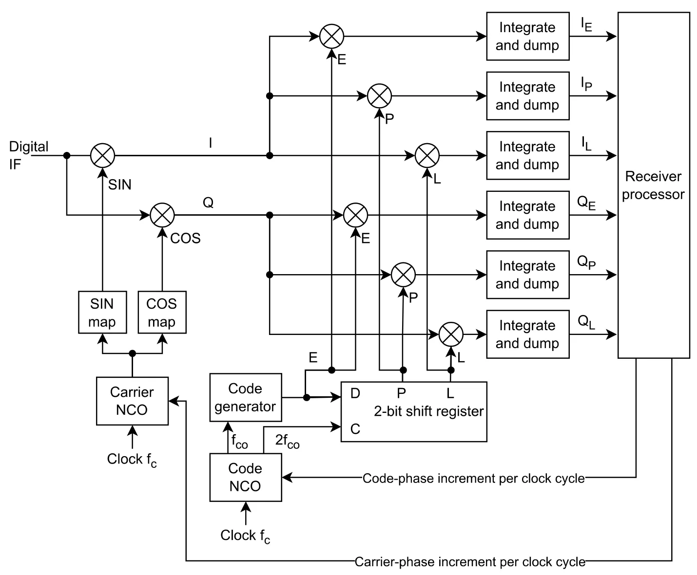
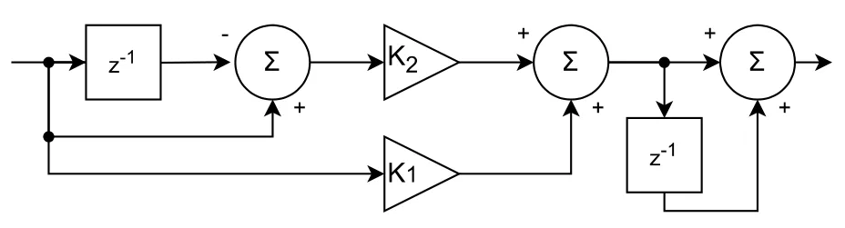
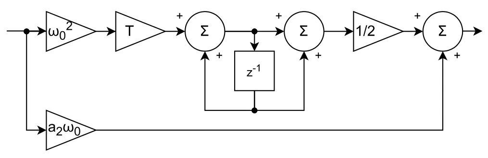
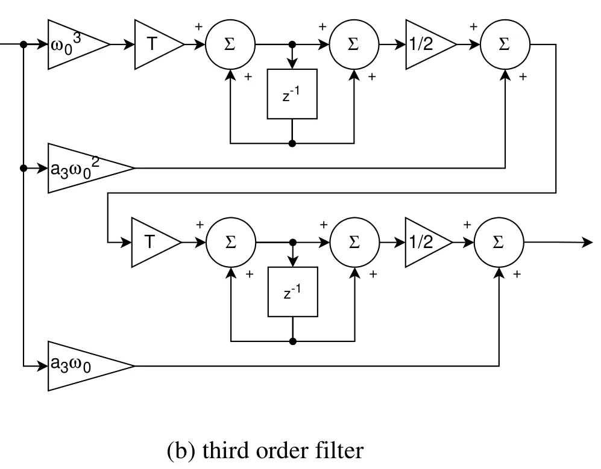
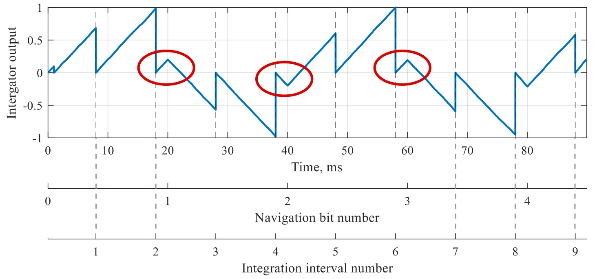
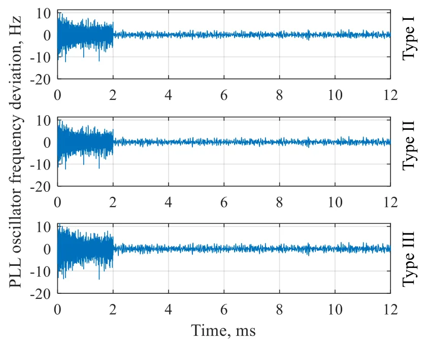
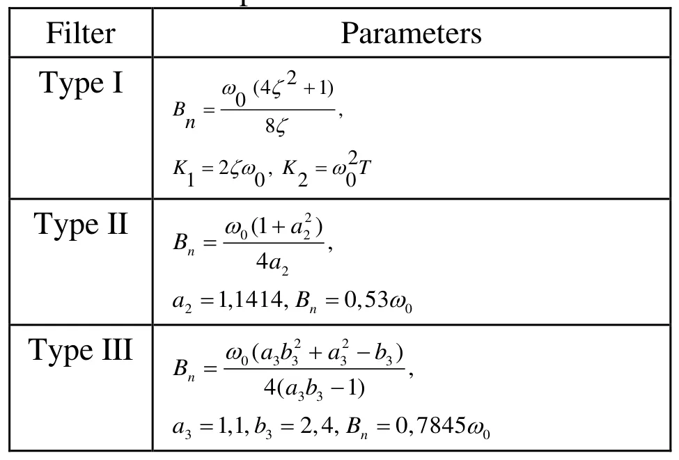

GNSS 接收机跟踪过程中的若干实践问题Some Practical Issues of the Tracking Process in GNSS Receivers
属于 GNSS 接收机底层跟踪实现的实用信号，对高动态或弱信号前端设计有参考；但与 GNSS/INS 紧耦合、RTK/PPP 和鲁棒定位算法的直接连接有限。
一句话工作总结
从积分、相关器间隔和环路滤波器参数出发，分析 GPS L1 接收机跟踪性能与瞬态响应。
摘要
论文分析 GNSS 接收机跟踪模块中的积分时长、早晚相关器通道间隔以及跟踪环路滤波器参数等关键设计问题，并讨论这些参数对瞬态过程和抗噪性能的影响。研究结合 GPS L1 信号的仿真、Vivado 环境、实验接收机以及外场实测信号记录，给出跟踪模块参数调整的实验结果。
The accuracy and noise immunity of GNSS receivers are largely determined by the performance of their tracking modules. To optimize performance, designers should take into account several key issues: the choice of integration intervals, the time delay (spacing) between the early and late correlator channels, and the parameters of tracking loop filters. This article presents the results of an analysis of these important practical aspects. The obtained results display some ways of improv-ing the parameters of transient processes, which occur in tracking modules. The study was conducted on an experimental navigation receiver, processing GPS L1 signals. Experimental data were obtained using the simulation software package, developed by the authors, Xilinx environment Vivado, as well as the processing of recordings of real navigation signals obtained in full-scale tests.
中文解读摘录
- 论文：arXiv:2608.19927 · PDF
- 作者：S. V. Shafran, I. A. Kudryavtsev, A. A. Kumarin
- 核心问题：分析积分时长、早晚相关器通道间隔和跟踪环路滤波器参数对 GPS L1 跟踪模块瞬态过程、精度和抗噪性的影响，并结合仿真、Vivado、实验接收机和真实信号记录验证调整方向。
- 判断：这是接收机底层实现的实用型工作，适合关注高动态或弱信号 GNSS 前端的读者；与 RTK/PPP、整数模糊度和 GNSS/INS 紧耦合定位的直接关联较弱，暂列 GNSS 基础跟踪项。
- 评分：6.8/10。
图表/页面预览
{kind=link}

{kind=link}

{kind=link}

{kind=link}

{kind=link}

{kind=link}

{kind=link}
